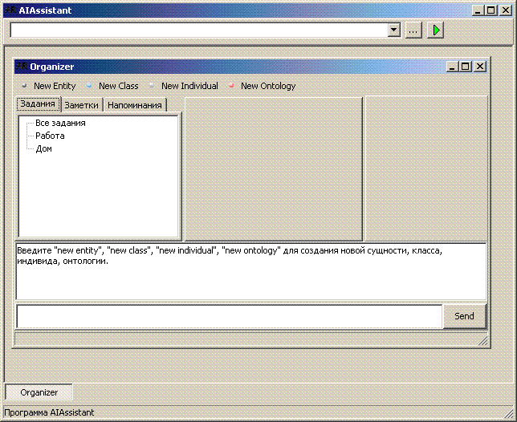

Достаточно долгое время текстовые документы успешно хранили информацию,необходимую человеку.
Но с течением времени этого стало мало. Появился гипертекст. В нем можно было соединить множество текстов в один бесконечный текст. Прыгая по ссылкам можно получить уйму полезной и бесполезной информации.
Мало кто ожидал, что информация будет возникать из воздуха только для того, чтобы привлечь внимание к какому-нибудь веб-сайту.
На смену гипертексту приходит XHTML.
Что же это такое?
Немного расширеный HTML, который, надеюсь, поможет отсеивать полезную информацию от бесполезной.
http://www.webmascon.com/topics/technologies/11a.asp
НО! Так как только человек решает, какая информация для него в данный момент более полезна, я думаю, необходимо предоставить человеку возможность выбора между разными категориями информации. Я имеюю ввиду, что информацию надо классифицировать.
В этом нам поможет OWL:
http://sherdim.rsu.ru/pts/semantic_web/REC-owl-guide-20040210_ru.html
Я думаю, цель проэкта АИАссистент - дать пользователям возможность удобного представления информации, чтобы Необходимая информация стала Доступной, Упорядоченой, Наглядной.
Обратимся к логике классов. Все, на что человек обращает внимание является информацией. Эта информация связана ассоциативными связями с другой и так по цепочке человек может добраться до всего, что ему нужно или может понадобиться.
Любое слово оторванное от контекста может яваляться классом. Контекст человека - его жизнь. Где он живет, в какой стране в каком году, кто его окружает, как его зовут, что он умеет делать , что было с ним в прошлом и т.п.
Представим, что человек занимается машинами. На экране компютера он видит пункт меню, ссылку или что-то еще, под именем "Машина" или "Автомобиль"
Он нажимает на эту ссылку и видит следующую страницу, где видит выбор между устройством автомобиля в целом, между марками автомобилям, странами - производителями автомобилей, годами изготовления и т.п.
Переходя по этим ссылкам он может получить ВСЮ интересующую его информацию, так как она Упорядочена и Наглядна.
Чтобы что-то стало упорядоченным, надо чтобы кто-то это упорядочил, потратил на это время. Представляете себе сотню людей, которые заполняют БД данными в течении нескольких лет? Достаточно трудоемкий процесс, неправда ли?
Создавая программу мы стараемся сделать Продукт, который будет полезен для большого количества людей.
Вариант первый: Веб-сервис.
Примеры: Google, yahoo, rambler, почтовые сервисы
недостатки: необходимость раскрутки сервиса для привлечения необходимого количества пользователей
Вариант второй - клиентская программа
Примеры: ICQ, Skype, IRC, eMule
недостатки: необходимость масштабной расскрутки бренда
Вариант третий: встроенный софт для мобильных телефонов, смартфонов и оригинальных мобильных устройств.
Недостатки: неясно, как внедрить наш софт в телефоны разных марок.
С другой стороны, если продукт будет необходимым, все и так его захотят поставить.
Здесь все могут броситься реализовывать идею по своему
Для начала надо уточнить, что человек может делать на компьютере?
Разделим пользователей на несколько групп:
Что можно предложить этим людям такого, чтобы всех их заинтересовать? Что-то такое, что можно было бы встроить в будущем в систему.
Не каждый хочет использовать те же самые ICQ, Skype, IRC, eMule. У всех свои запросы.
Не каждый ведет дневник, календарь, учет своих финансов.
Система AIAssistant является платформой для работы приложений и агентов.
AIAssistant - это программа-персоональный помощник человеку. Основной управляющей формой является главное окно с меню и строкой ввода команд. С помощью главного окна можно производить настройки (язык общения, виды запуска и т.д.), а также открывать новые виды работ (отдельные приложения системы) в отдельных формах.

Рис. 1. Главное окно программы AIAssistant и приложение AIOrganizer
На данный момент (30.06.2007) система AIAssistant создается в виде локальных приложений: AIAddressBook.exe, AIOrganizer.exe, AIReminder.exe. В каждой из этих программ "вшит" определенный GUI пользователя. В дальнейшем будет одна программа (AIAssistant.exe) внутри которой GUI пользователя будет формироваться динамически. Формат для хранения внешнего вида форм будет XUL.
Рис. 2. Структурная схема системы AIAssistant.
Система AIAssistant состоит из двух основных частей:
1) Ядро системы (AIKernel) и
2) клиентской части (GUI).
В данный момент обе эти части компилируются в одно Windows-приложение.
Важное замечание для разработчиков!!!
Принято такое наименование модулей, классов и объектов:
Core - микроядро системы (включает в себя механизм передачи сообщений и
объект доступа к данным (KnowledgeBase))
Kernel - ядро системы (включает в себя микроядро, машину логического вывода,
базу знаний (объект доступа к данным и объекты реализующие непосредственно
запись и чтение данных)), агентов). Kernel является ядром для внешних клиентов.
Микроядро системы AIAssistant предназначено для обеспечения обмена данными между модулями (агентами, клиентами и базой знаний). Все модули обмениваются между собой сообщениями в FIPA-ACL формате. Для обеспечения быстродействия внутри программы (AIAssistant.exe) сообщения формируются и передаются в виде объектов TAclMessage.
В некоторых случаях разрешается обращаться к модулям системы минуя передачу сообщений через микроядро.
При поступлении сообщения в микроядро (вызов функции AddMessage()) сообщение передается тому модулю, кому оно предназначено (Message.Sender).
Если сообщение направлено микроядру, то в поле Message.Sender указывается "Core". Если в сообщение указана команда для выполнения, то она выполняется (используется метод AddCommand(). Метод AddCommand() для выполнения команд можно вызывать напрямую (без использования метода AddMessage()). Микроядро может обрабатывать следующие команды (0.1 alpha):
Вот перечень основных направлений развития системы AIAssistant как универсального помощника человеку.
AIAssistant.Organizer базируется на платформе AIAssistant и является GUI приложением. Помимо AIAssistant.Organizer планируется создать приложение для наблюдения и управления агентами и модулями системы (AIAssistant.Manager), небольшой набор логических игр (AIAssistant.Game), приложение для анализа данных (AIAssistant.Analysis) и др.
Комментарии:
1. Сейчас решается вопрос какую БД выбрать. Я сейчас выбираю между FireBird и FramerD (www.framerd.org)
2. FramerD исходники переделал на Delphi примерно на 30%. (в процессе переделки я изучаю внутреннюю структуру и взаимосвязи объектов - мне так проще + на выходе готовые исходники Delphi получаются)
3. Сейчас разбираем исходники CLIPS (завершено примерно 10%) для того, чтобы встроить в AIAssistant.
4. Также разбираю исходники JENA-Ontology (завершено примерно 30%). Я еще не знаю зачем, но по видимому это единственные нормальные исходники для работы с Онтологией.
5. Сейчас (24.04.2007) мы с Виктором решаем вопрос с языком общения человека с системой. Видимо первоначально общение будет походить на ввод команд (как в AutoCAD) на LISP-CLIPS-подобном языке.
7. Вообще релиз проекта AIAssistant Виктор планирует сделать не раньше 1 июля. Я хотел бы уже в ближайшее время опубликовать первый рабочий вариант. Но...
Проет довольно масштабный. Только для ядра необходимо следующее:
Когда будет готово ядро и механизм логического вывода - тогда можно
подключать к системе модули (распознавание речи, распознавание видео,
управление роботами и т.д. и т.п.).
Но для коммерческого применения мы предполагаем делать ЭС под
конкретные Предметные Области.
Система AIAssistant будет состоять из шести частей:
AIAssistant Core - Ядро системы. Главная часть системы.
AIAssistant KnowlegeBase - хранилище знаний.
AIAssistant Studio - программа, реализующая функции программирования агентов системы AIAssistant. Может работать и без хранилища знаний, используя другие источники данных.
AIAssistant Viewer - программа, ориентированная на конечного пользователя и предназначенная для просмотра подготовленных при помощи AIAssistant Studio отчетов (форм). AIAssistant Viewer позволяет минимизировать требования к пользователю системы, т.к. все необходимые операции выполняются автоматически при помощи подготовленных ранее сценариев обработки. Пользователю AIAssistant Viewer необходимо только выбрать и настроить вариант отображения полученных результатов.
AIAssistant Server – служба, обеспечивающая удаленную обработку данных и предоставляет доступ к хранилищу знаний. Позволяет автоматически обрабатывать данные и переобучать модели на сервере, оптимизирует выполнение сценариев за счет кэширования проектов и использования многопоточной обработки.
AIAssistant Client – клиент доступа к AIAssistant Server. Обеспечивает доступ к серверу из сторонних приложений и управление его работой.
1.1. Агентом является все, что может рассматриваться как воспринимающее свою среду с помощью датчиков и воздействующее на эту среду с помощью исполнительных механизмов.
1.2. В проекте AIAssistant каждый агент находится в окружающей среде, состоящей из аналогичных агентов, расположенных в общей группе. Агенты могут обращаться к ресурсам группы для общения с внешней по отношению к ней окружающей средой. Такой средой является все пространство программы, содержащее набор групп и внешние интерфейсы. Т.о. имеется набор иерархических контейнеров - сред.
1.3. Агент - это объект ООП, который реально создан в оперативной памяти компьютера и который может выполнять определенные операции над данными.
1.4. Агенты - единственная "движущая сила" программы AIAssistant.
2.1.1. Единственным способом общения агента с окружающей средой является посылка и прием сообщений.
2.1.2. Сообщения должны соответствовать языку xxx (нужно придумать название и сам язык).
2.1.3. Сообщения могут быть адресованы другим агентам, либо контейнеру - группе.
2.2.1. Единственным хранилищем информации в программе AIAssistant являются изолированные Базы Знаний (БЗ) агентов.
2.3.1. Машина принятия решений (МПР) является основным компонентом агента.
3.1. Все выполняемые агентом операции в каждой МПР происходят в одном программном потоке, т.е. последовательно. При прерывании его работы текущая деятельность приостанавливается и начинается процесс обработки события/прерывания. После его обработки прерванная деятельность продолжается. Из этого следует, что в случае потребности распараллеливания работ текущий агент должен породить один или несколько дочених агентов.
4.1. Вновь создаваемые агенты могут наследовать знания одного или нескольких родительских агентов. Такой набор наследственной информации является генетическими знаниями (ГЗ). После передачи ГЗ связь с родительскими агентами возможна лишь с помощью стандартного интерфейса - сообщениями, если в текущий момент времени родительские агенты существуют.
4.2. При множественном наследовании происходит выборочное перекрытие ГЗ, передаваемых родителями. Перекрытие происходит в порядке наследования от более раннего родителя к более позднему и определяется статусом ГЗ.
4.3. Каждый вновь создаваемый агент выполняется в отдельном программном потоке. Это позволяет агентам работать параллельно или псевдопараллельно.
5.1.1. После создания агента он может быть подключен к агенту - учителю, в том числе и родителю, способному передать ему дополнительные знания, если ГЗ окажется недостаточно для выполнения работ.
5.1.2. Действующие агенты могут быть направлены на курсы повышения квалификации с целью, аналогичной предыдущему пункту.
5.2.1. Созданный агент может заниматься управлением другими агентами, либо только выполнять рабочие функции. Т.о. для создания полноценного агента необходим минимальный социум, состоящий из двух агентов - управляющего и инструментального агентов. Такой полнофункциональный социум можно назвать суперагентом. Необходимость в таком социуме вытекает из параллельности выполнения указанных работ.
6.1.1. Управляющий агент. Это агент, занимающийся управлением собственного поведения и поведения подчиненных агентов. Это как бы "Я", "Элементарный кирпичик" поведения.
6.1.2. Исполнитель. Такой агент занимается выполнением порученной управляющим агентом работой. Это "рабочий муравей". Поэтому решения. выработанные им, касаются лишь решаемой задачи.
6.2.1. Системные сервисы. Это агенты, которые существуют всегда и постоянно активны.
6.2.2. Пользовательские сервисы. Это долгоживущие постоянно активные агенты, кот. может создать и уничтожить пользователь.
6.2.3. Приложения. Это долгоживущие агенты, которые активизируются по мере необходимости.
6.2.4. Временные, одноразовые агенты. Это агенты, которые создаются на время выполнения конкретной работы, а затем после выполнения работы уничтожаются.
1.1. Проект создается как Shareware, т.е. можно сначала попробовать, а затем купить. Но конкретный подвид бизнес-модели еще нужно уточнить (ограничения по времени или по функциям, либо выпускать 2 версии одновременно - бесплатную но ограниченную версию и коммерческую ).
AIAssistant - это обычная программа, запускаемая пользователем. Основной управляющей формой является панель управления. Она позволяет производить настройки (язык общения, виды запуска и т.д.), а также открывать новые виды работ в отдельных формах. В каждой такой диалоговой форме создается новая группа агентов, позволяющих выполнять работы, требующиеся пользователю. В диалоговых формах имеется чат - консоль для текстового общения пользователя с группой агентов, а также дополнительные элементы управления. Дополнительно в диалоговой форме имеется зона для работы с информацией в стиле Windows.
3.1. Небольшой набор игр, вероятно логических, карточных и др.
3.2. Универсальный навигатор по БЗ, с помощью которого можно осуществлять основные манипуляционные операции с информацией как внутри других работ, так и отдельно.
3.3. Органайзер (учет работ, записная книжка, работа с расписаниями, календарь и т.д.).
3.4. Система учета книг, дисков и т.д., основанная на навигаторе.
3.5. Экспертная система (ЭС) по выбору, модификации имеющихся и созданию новых видов работ.
3.6. ЭС помощи, подсказок, пояснений.
3.7. Каталогизатор дисков.
4.1. Основой хранения информации является иерархическая база знаний, совместимая с языком OWL консорциума W3.ORG
4.2. Система состоит из отдельных групп агентов. Каждая группа агентов имеет собственный интерфейс с пользователем. Агенты программируются с помощью правил, которые сохраняются в БЗ.
5.1. Разработка подробного плана работ.
5.2. Создание структуры БД.
5.3. Разработка принципов программирования агентов.
5.4. Создание класса программного агента.
5.5. Разработка визуального интерфейса диалога с пользователем.
5.6. Сборка ядра проекта.
5.7. Отладка ядра проекта.
5.8. Разработка приложений, указанных в п.3.
5.9. Оформление проекта (иконки, заставки, задники, кнопки и т.д.).
5.10. Создание инсталляционного дистрибутива.
5.11. Тестирование и окончательная отладка дистрибутива.
5.12. Размещение продукта на Shareware архивах, реклама и т.д.
6.1. Язык программирования - Delphi.
6.2. БД - Firebird 2.0 Embedded version.
6.3. Инсталлятор - InnoSetup.
6.4. Редактор иконок - Microangelo.
6.5. Генератор PAD файла - Padgen.
6.6. Редактор Help файла - RoboHelp
7.1. Ultra Hal Assistant
7.2. Каталогизаторы http://www.3dnews.ru/software/katalog_1/
На первом этапе создается основа системы - ядро.
На втором этапе оформляется внешний вид програмы, логика взаимодействия модулей и дополнительные средства разработки и отладки. Нужно создать главное окно программы. В главном окне должно быть: